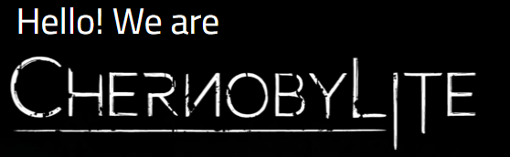

Get ready for a thrilling adventure of survival, conspiracy, horror, love, and obsession. of that will prove to you that it’s not about how you face your fears, it’s about how you survive them.
Chernobylite is a new game from the creators of the critically-acclaimed Get Even.
AVAILABLE NOW!
EARLY ACCESS ON STEAM AND GOG
Radiation alert! The gates to the 3D-scanned Exclusion Zone in Chernobylite are now OPEN!
Chernobylite is now available on Steam Early Access and GOG.com! Starting today, you have the incredible opportunity to breathe in the terrifying charm of the Nuclear Power Plant in Chernobylite.
Experience 8 hours of constant survival and non-linear storytelling. Get access to free-of-charge updates that add new episodes, locations, characters, and equipment to the game. And if you’re determined enough,discover all the possible endings!
embark on an unforgettable journey for just 29.99 USD / 24.99 EUR / 23.99 GBP / 99 PLN / 249 UAH / 666 RUB through Steam Early Access and GOG “Games in Development”.
Uncoverdark secret
26th, 1:23 AM Ukrainian time, 1986. The day when Chernobyl nuclear catastrophe happened and the life of 350,000 people changed forever. At the time you were just a young, passionate, naive physicist working at the facility. And like many, you’ve lost what was most dear to you – your girlfriend.
30 years later you’re still struggling with the demons of the past. So to finally put them to rest, you are getting back to what’s now called the Chernobyl Exclusion Zone.
Dive into a deep, personal story
What is Chernobylite?
Chernobylite is a science-fiction survival horror
The game is mixing free exploration of its
disturbing world with challenging combat, unique crafting
and non-linear storytelling. We will constantly challenge you to:
SURVIVE
Ally or compete with other stalkers of the Chernobyl zone
to survive. Each day brings new challenges. Plan your
strategy carefully if you want to survive.
PLAY BY YOUR OWN RULES
Craft your gear and weapons to protect yourself from the
supernatural threats lurking in the zone. Decide what
happens in the world around you.
Chernobylite
main features
Explore the beautiful and horrifyingly accurate
3D-scanned recreation of the Chernobyl Exclusion Zone;
Collaborate or compete with other stalkers you
meet in the Zone. But whatever you do never fully
trust them. Remember everybody has a hidden agenda. Always;
Face and survive the natural and supernatural threats;
Immerse yourself in the non-linear, thrilling, science-fiction horror story;
Make a good use of your character's knowledge, to craft your
equipment and manage your supplies;
Fight against the savage creatures pouring from the alternate reality
Investigate and collect data with sophisticated environment and substanceanalyzing tools.
Early Access What will you find?
Check the new trailer showing in a nutshell what Early
Access version of the game will have to offer and
prepare to enter the so far undiscovered paths of
Pripyat and Chernobyl Power Plant.
Thanks to our backers' support the game has been
enriched with new locations, characters and even
additional game mechanics.
Explore the “Heart of Darkness” – a Chernobyl Nuclear Power Plant, terrifying environments of Kopachi
kindergarten, the mysterious Eye of Moscow, and fragments of the abandoned city of Pripyat.
Early Access will offer an endless survival experience with 8 hours of storytelling and free-of-charge access to
the upcoming updates adding new episodes, locations, characters, and equipment to the game.
The story in Chernobylite is non-linear, unpredictable and fully dependent on player’s decisions, which leads to
many possible endings. That means even if you finish the story in EA,
you can relive it again many times and in many different ways.
The team behind the game
Who are we?
Our team is small, but experienced and brave enough to
work under the radiation on "Chernobylite". We have finished many projects so far - “Get Even”, "Chernobyl VR Project",
"Painkiller Hell & Damnation", "NecroVision" and many other games
gave us technology and ideas to deliver the craziest post-apo
game ever done.
As you may see, not all of us are the stalkers or ghosts of
the Pripyat. In general, we are a group of talented girls
and handsome guys with plenty of skills and tons of
passion for making video games and other crazy stuff.
How do we work?
We are traveling to Chernobyl Exclusion Zone to gather
materials and references, taking thousands of pictures
and scanning the area with drones. All of this in order
to provide the most accurate version of the Zone ever.
No matter the dust, the weather, the temperature or
even radiation!
Chernobyl Exclusion Zone, filled with a vast number of
abandoned buildings, offers stories at every turn. And we
search for all those little details to address the mood of
the place.
Here's a small introduction to a series of video materials in which we'll show
you how we work in Chernobyl. As you may have noticed, we often visit the Exclusion Zone
to capture all the data required for the most realistic recreation of this beautiful and
scary world. If you want to see more,don't forget to subscribe to our YouTube, Facebook
and Instagram accounts.
Follow us
our social media channels to get all fresh news,
videos and pictures about the project.
Do you want to take a tour to Chernobyl? You can do it right now!